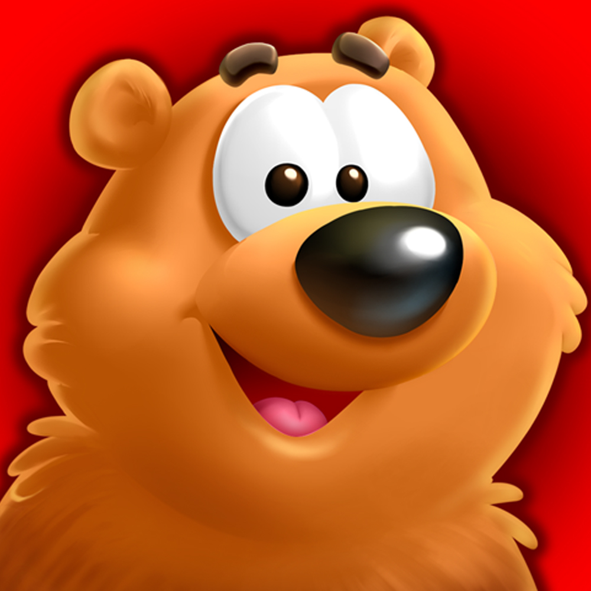
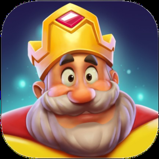
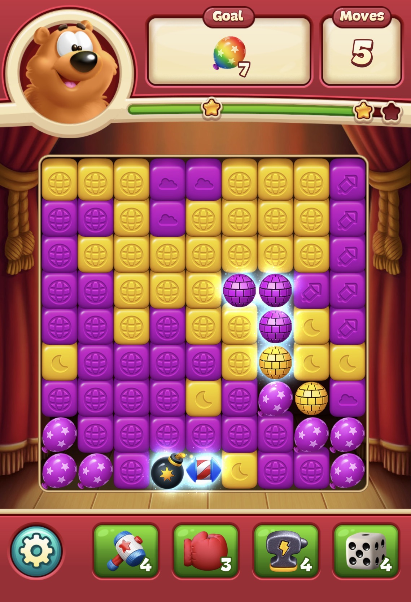
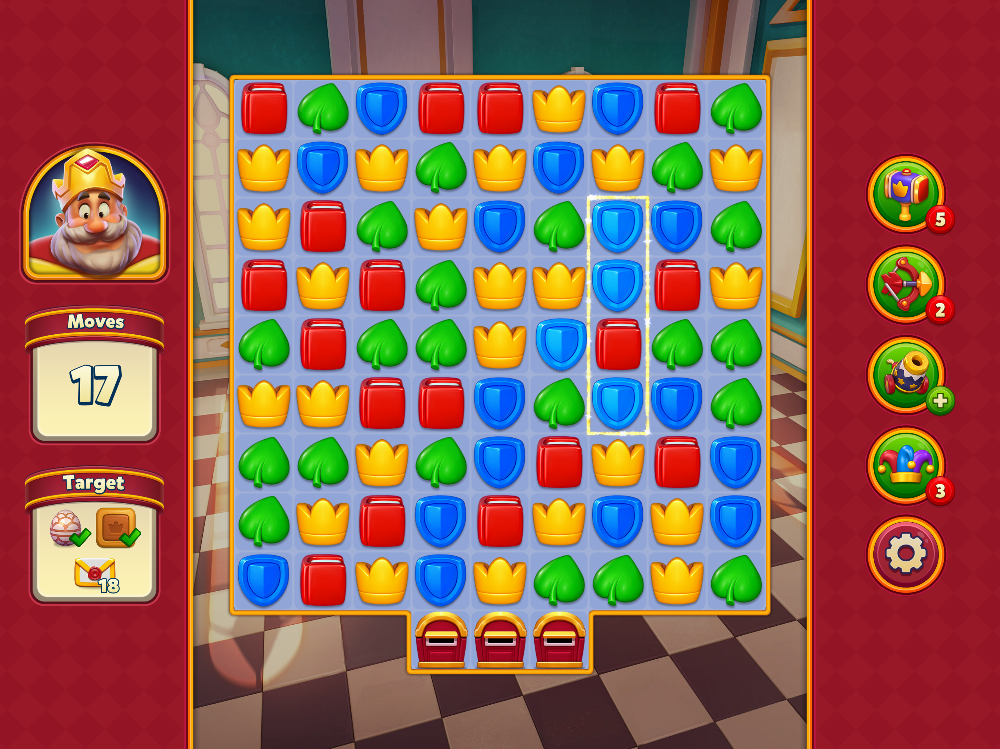
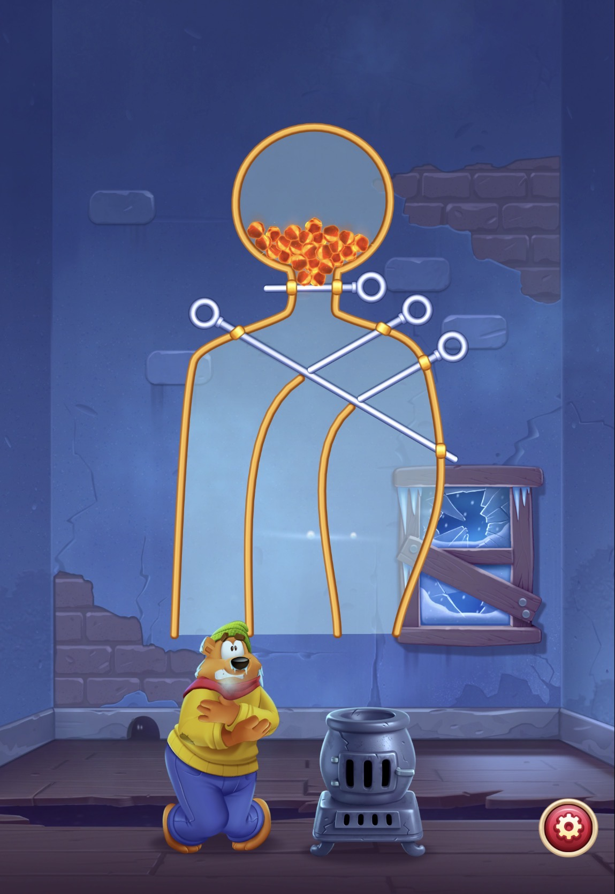
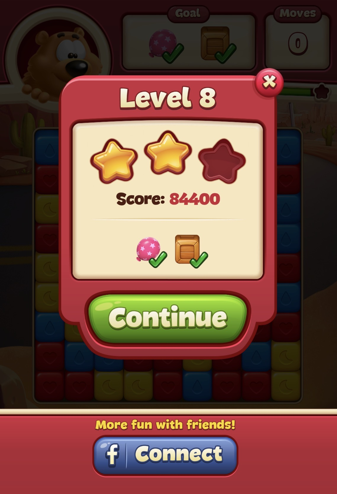

More intuitive core mechanic, smooth onboarding, strong mini-game pacing, but weaker difficulty balance.
Early game product analysis
Toon Blast vs Royal Match
A 40-level comparison of mechanics, level design, difficulty, graphics, UI, mini-games, and player feedback.


Winner
Royal Match
Stronger overall due to premium visuals, clearer difficulty curve, broader appeal, and added strategic depth.
Royal Match performs more strongly overall and is the game I would continue playing after the early-game analysis.
Executive summary
Royal Match has a comparative advantage in almost every category.
I analyzed the first 40 levels of Toon Blast and Royal Match in terms of game mechanics, level design, level difficulty, graphics, and user interface. I first examined each game separately, then compared them category by category.
The analysis shows that Royal Match has a comparative advantage in almost every category, including areas where Toon Blast is especially strong, such as its intuitive tap-to-blast mechanic and generally frictionless onboarding structure.
Royal Match's graphics and added layer of strategic thinking make it more appealing to a wider audience. Overall, Royal Match stands out as the stronger game.
Comparison matrix
Category scores and takeaways
Category
Toon Blast
Royal Match
Comparative takeaway
Game mechanics - 25%
More intuitive and straightforward - 8.5
More traditional and strategic - 9
Royal Match is slightly better overall, while Toon Blast stands out in core mechanic intuitiveness.
Level design - 20%
Intentional streak breaker and annoying 3-star scoring system - 7
Mix of randomness and planning - 8
Royal Match offers smoother level design through more evenly distributed luck and stronger intentional structuring.
Level difficulty - 15%
Uneven distribution of easy levels - 6.5
Structured difficulty curve - 9.5
Royal Match's sequence-by-sequence design after level 20 gives it a clearer strategic advantage.
Graphics - 25%
Toy-like visual style - 8
Connected and premium game-world design - 9
Royal Match appeals to a broader audience, while Toon Blast feels more child-oriented.
User interface - 10%
Simple but less harmony - 8
Basic and connected design - 8.5
Both are low-friction, but Royal Match has stronger visual harmony.
Mini-game structure - 5%
Relaxing and well-designed - 9.5
Unnecessarily long for a relaxation mini-game - 6.5
Rescue Bruno creates momentum; Knight's Nightmare adds friction without normal level progression.
Extracted visual evidence
Screenshots and curves from the report




Deep dive
Full extracted analysis
General impression
Toon Blast is enjoyable through the first 40 levels because it introduces new obstacles, boosters, and different board structures that prevent the experience from becoming boring. The tap-to-blast mechanic is visually intuitive, easy to understand, and explained effectively through tutorials.
The first 40 levels include a few spikes and some medium-difficulty levels, but most are quite easy. The main strength is the intuitiveness of the core mechanic; the main weakness is the uneven distribution of easy levels.
Game mechanics
Toon Blast focuses on grouping blocks and blasting them through tapping. The first 40 levels introduce 5 new obstacles and 5 new boosters, all explained clearly. Obstacles improve gameplay because each one has its own clearing requirements, encouraging more strategic moves.
Traditional booster combinations are satisfying, but disco ball combinations appear too frequently. Combining two disco balls can clear almost the entire board, and this happened in roughly 12 to 13 of the first 40 levels, reducing challenge and weakening balance.
Level design
Board shapes and obstacle distributions change continuously, maintaining visual and gameplay variety. New obstacle levels are usually easier, which reduces friction and supports the feeling of wanting to play one more level.
Rescue Bruno appears approximately every seven levels. These mini-game levels are relatively easy, but they provide a pleasant break from the main tap-to-blast loop and make the first 40 levels feel more dynamic.
Difficulty, graphics, and UI
The first failure occurs at level 18, which feels like an intentional streak breaker because the board offers limited opportunities to create larger combinations. Other spikes appear at levels 25, 29, and 30, but hard levels are usually followed by easier ones.
The toy-like animal characters create a cute, friendly atmosphere. The UI is simple and clear, but post-level animations can feel boring, and the 3-star system can reduce closure because players cannot replay completed levels just to improve a lower star result.
General impression
Royal Match is a traditional match-3 puzzle game with strongly integrated game-world visuals and mechanics. It feels premium in nearly every aspect. The teaching phase is longer than usual, making onboarding more comfortable and controlled.
New obstacles and boosters are explained clearly, and the challenge is distributed more evenly overall. The most striking quality of the early experience is its premium polish across gameplay and UI.
Game mechanics
Royal Match builds strategic value through move sequencing. After around level 20, the game teaches players that choosing the first move carefully matters because each move can significantly affect the next board state.
Like Toon Blast, it introduces 5 boosters and 5 obstacles in the first 40 levels. However, combinations often require more judgment, since the player must decide which combination is most effective in a specific board situation.
Level design
Royal Match rarely feels repetitive. From level 1 to around level 21, it introduces a new obstacle or booster almost every two to three levels. After level 21, variety comes more from board structures, obstacle arrangements, and rising complexity.
Bonus levels at levels 20 and 40 are not meant to test the player. They provide a coin-earning break after harder stages and help reduce tension.
Difficulty, graphics, and UI
Difficulty is stable and very easy through the first 10 levels, then increases gradually. First failure occurs at level 24. Harder levels are usually followed by a sequence of easy levels, restoring momentum more effectively than Toon Blast.
Royal Match has a richer visual identity because progress is connected to rooms, areas, and the knight's world. The UI is clear, polished, and natural, and combination reminders reinforce mechanics without interrupting flow.
Game mechanics comparison
From my perspective, Toon Blast's tap-to-blast mechanic is more intuitive and enjoyable than the traditional match-3 system. However, Royal Match's additional layer of strategic thinking lets it outperform Toon Blast in the mechanics section.
UnderstandabilityEntertainment
Toon Blast9.87.7
Royal Match9.88.9
Level design comparison
Remaining moves are highly correlated with difficulty. Royal Match's stronger competitive feel comes partly from its more controlled distribution of remaining moves. Compared with Toon Blast, it contains fewer very easy levels.
Mini-games and bonus levels
Toon Blast's mini-games are well-designed and appear approximately every seven levels. Royal Match's bonus levels also reduce tension and reward the player, but Knight's Nightmare is longer and still relies on the same puzzle structure, which creates more friction.
Graphics comparison
Royal Match's premium visual style appeals to a broader audience. Toon Blast's graphics feel more child-oriented and likely more attractive to younger players. Royal Match feels more detailed, integrated, and accessible across age groups.
User interface comparison
Both games have clear, low-friction interfaces. The difference is visual harmony: Royal Match connects UI elements to the overall game world, while Toon Blast feels more purely functional.
Difficulty distribution
EasyMediumHardBonusMini-game
Toon Blast315405
Royal Match2510323
Failure and playtime
First failTotal failAvg play time
Toon Blast18531.8s
Royal Match24745.4s
Supplementary player feedback
Because my own gameplay behavior may not fully represent a broader player base, I gathered input from 5 people with different backgrounds in age, gender, and gaming experience. The sample is directional, not statistical proof.
MechanicsVarietyDifficultyVisualUI
Toon Blast8.88.47.08.08.4
Royal Match9.49.09.29.69.2
Participants generally preferred Royal Match's mechanics, visuals, and UI. Toon Blast's tap-to-blast mechanic is highly intuitive, but can make the game feel too easy and therefore less entertaining.
Key product takeaways
Recommendations from the report
For Toon Blast
- Adjust combo distribution to improve the difficulty curve.
- Increase the number of blocks required to create a disco ball to reduce overpowered full-board clears.
- Test whether unsolvable spike levels affect a large portion of users, then rebalance those levels if needed.
- Replace the 3-star structure with a score bar to avoid the negative feeling of empty stars after completion.
- Improve larger-screen compatibility, especially because the game may appeal strongly to children.
For Royal Match
- Lower the difficulty of Knight's Nightmare to improve the onboarding experience.
- Remove unnecessary pieces from the mini-game structure and guide the player more clearly toward the pipeline path.
- Reduce board size so the two-step structure feels less time-consuming.
- Validate changes through A/B tests with early-stage players before implementation.
- Apply changes only if continuation rates show clear improvement.
Final conclusion
Royal Match is the clear winner overall.
Toon Blast has a highly enjoyable and easy-to-learn tap-to-blast mechanic, and its mini-game micropuzzles strengthen onboarding. However, Royal Match has a stronger difficulty curve, broader visual and UI appeal, and a strategic layer that makes it more preferable after the first 40 levels.